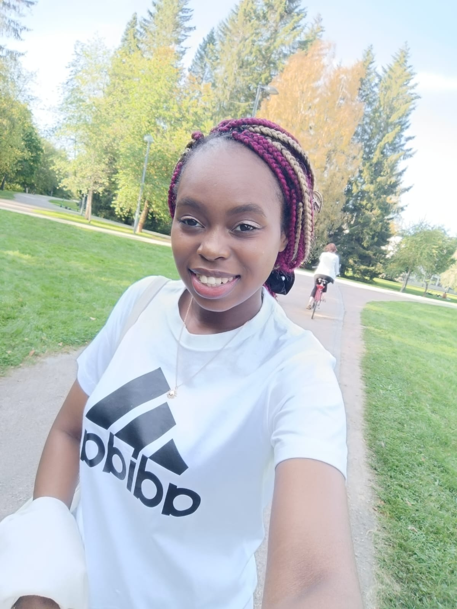

Get To Know the Portfolio Owner!
Want to know more about the face behind this portfolio? Well, let me paint you a picture. I'm a 24-year-old globetrotter hailing from the vibrant streets of Zimbabwe. My journey through academia has been nothing short of an adventure, taking me from the historical marvels of Europe, through Greece and the UK, and currently residing in Helsinki, Finland.

Loving the Code:My Passion

Talking about passion, what is it that sets my soul on fire? Well, It's got to be programming and tech! There's something magical about deciphering the mysteries of code, like unlocking a treasure chest of endless possibilities. Whether it's mastering new programming languages or diving into the fascinating world of AI and ML, I'm always up for the challenge. In addition to my passion for technology, I excel as a problem-solver, adept at time management and effective communication. Whether working independently or as part of a team, I bring a high level of proficiency and adaptability to any task or project, ensuring successful outcomes.
Beyond Binary
Apart from bytes and bits, I treasure my commitment to honesty and transparency. My optimistic approach towards life and my compassionate demeanor make up my unique personality. I am a firm believer in the potential of AI and Machine Learning in shaping our tomorrow. My ambition? To be on the frontlines of technologies that elevate people's lives! My dedication to the positive and ethical use of technology is reflected in my projects, showcasing not only my tech prowess but also my commitment towards a happier, safer society.
My Journey:
Ah, my journey into the realm of technology, is a tale filled with twists, turns, and moments of enlightenment. At first, I admit, I was skeptical about technology's impact on morality and values. But then, a profound quote by Omar Bradley sparked a shift in my perspective. Suddenly, I saw technology not as a threat, but as a powerful force for good. With newfound clarity, I set out on a quest for knowledge, driven by a burning curiosity about the "how" and "why" of the world around me. Guided by an analytical mindset akin to that of a scientist, I found myself drawn to the field of Computer Science. Along the way, I navigated through the challenges of academia, excelling in both science and arts during my GCSEs and A-Levels. During my bachelor's degree, I dipped my toes into the world of front-end web development and UX/UI design. But it wasn't until I stumbled upon Artificial Intelligence (AI) that I discovered my true passion. As Einstein famously said, "Everybody is a genius," and those words resonated deeply with me as I persevered through setbacks, including a challenging period of mental health concerns.
But adversity only fueled my determination, leading me to invaluable experiences like volunteering at a local charity culinary club and finding solace in the art of poetry. Each hurdle became an opportunity for personal growth and resilience, shaping me into the resilient and versatile individual I am today. Despite facing financial hardships all throughout my academic journey, my mother's unwavering dedication became my guiding light. Thanks to scholarships like the Science, Technology, Engineering, and Mathematics scholarship program and the Varadi Scholarship, I was able to pursue my dreams of higher education, culminating in a Bachelor's degree in Computer Science. And so, my journey continues, fueled by a relentless pursuit of knowledge and a steadfast commitment to making a positive impact on the world through technology.
My Vision
Let's delve deeper into the realm of dreams and aspirations. Picture a world where technology isn't merely a tool but a beacon of hope guiding us towards a brighter future. That's the world I envision, and as an aspiring engineer, I'm determined to make that vision a reality. I see myself as a pioneer of innovation, tackling some of humanity's most pressing challenges. Whether it's revolutionizing energy solutions or developing cutting-edge electronics, I'm eager to roll up my sleeves and plunge into the realm of possibility. But my vision goes beyond technological advancements alone. I dream of a world where everyone has access to the tools they need to thrive, regardless of their background. However, I also recognize the potential risks of unchecked technological advancement. Therefore, I'm committed to not only exploring the potential of technology but also ensuring its ethical use. After all, if we're not careful, our savior could become our executioner. I firmly believe that technology has the power to level the playing field and empower individuals to reach their full potential. As I embark on this journey, I'm driven by a sense of purpose and a deep commitment to making a meaningful impact on the world around me. I refuse to settle for the status quo and am determined to push the boundaries of what's possible, one innovation at a time. I dream big and challenge myself to envision a world where technology isn't just a tool but a force for positive change. My goal is to turn that vision into reality, making the future brighter and happier for generations to come.